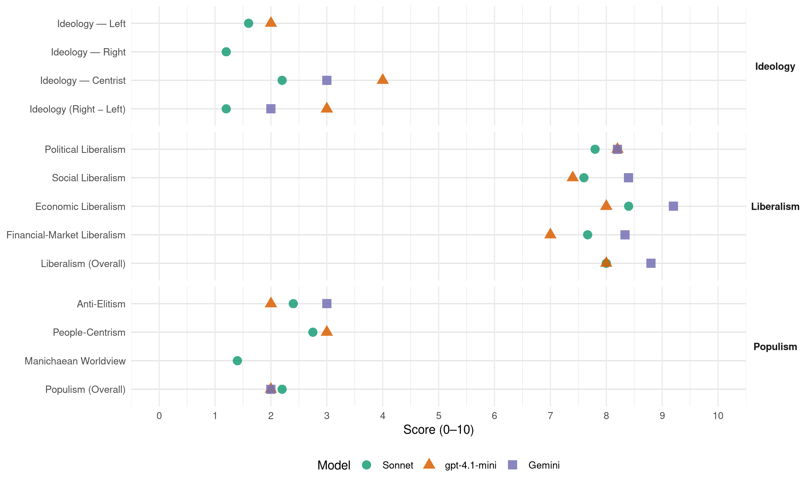

LRLS (Lithuania, 2016)
manifesto_id 88450_201610
Get full text: This site shows derived annotations and short verbatim quotes only. The full manifesto text is © Manifesto Project / WZB — obtain it via manifesto-project.wzb.eu using the manifesto_id above.
Headline scores
| Dimension | Sonnet | gpt-4.1-mini | Gemini |
|---|---|---|---|
| Populism (Overall) | 2.2 | 2.0 | 2.0 |
| Anti-Elitism | 2.4 | 2.0 | 3.0 |
| People-Centrism | 2.8 | 3.0 | – |
| Manichaean Worldview | 1.4 | – | – |
| Ideology (Right − Left) | 1.2 | 3.0 | 2.0 |
| Liberalism (Overall) | 8.0 | 8.0 | 8.8 |
| Political Liberalism | 7.8 | 8.2 | 8.2 |
| Social Liberalism | 7.6 | 7.4 | 8.4 |
| Economic Liberalism | 8.4 | 8.0 | 9.2 |
| Financial-Market Liberalism | 7.7 | 7.0 | 8.3 |
Evidence per dimension
Economic Liberalism
Gemini · score 10.0 · verified · chunk 1
“Kurti palankią aplinką verslui”
mažinti mokesčius; Kurti palankią aplinką verslui; Valstybei gyventi pagal išgales
Gemini · score 9.0 · verified · chunk 2
“konkurenciją tarp asmens sveikatos”
pacientų savalaikį aptarnavimą, didinsime konkurenciją tarp asmens sveikatos priežiūros paslaugų teikėjų
Gemini · score 9.0 · verified · chunk 3
“atsisakyti paslaugų, kurias gali suteikti privatus sektorius”
Valstybė turi taip pat atsisakyti paslaugų, kurias gali suteikti privatus sektorius, pavyzdžiui, mokymo bazės, poilsio namai ir kt.
Gemini · score 9.0 · verified · chunk 4
“Užtikrinsime laisvą konkurenciją, parinkdami šių”
mažėjimo arba, pavyzdžiui, atliekų, tinkamų deginimui, mažėjimo tendencijas. Užtikrinsime laisvą konkurenciją, parinkdami šių projektų įgyvendintojus. Atsisakysime mažiau reikalingos
Gemini · score 9.0 · verified · chunk 5
“būtina kuo greičiau užbaigti vienvaldišką monopoliją”
Liberalų sąjūdžio manymu, būtina kuo greičiau užbaigti vienvaldišką monopoliją Lietuvos geležinkelių sistemoje ir įgyvendinti reformą pagal ES teisės aktus
gpt-4.1-mini · score 9.0 · verified · chunk 1
“kurti palankią aplinką verslui; mažinti mokesčius; skatinti verslumą”
Lietuvos Respublikos liberalų sąjūdis pasisako už: geresnes sąlygas žmogui kurti savo ekonominę gerovę; kiekvieno jos piliečio ir valstybės finansinį saugumą bei stabilumą; atvirą, sąžiningą ir atsakingą valstybės turto valdymą; kurti palankią aplinką verslui; mažinti mokesčius; skatinti verslumą.
gpt-4.1-mini · score 7.0 · verified · chunk 2
“rinkos, konkurencijos, verslo, mokesčių, privatizacijos, prekybos”
…siekiame skatinti rinkos, konkurencijos, verslo plėtrą, efektyvų mokesčių sistemą, privatizaciją ir prekybos atvirumą…
gpt-4.1-mini · score 8.0 · verified · chunk 3
“Ekonominis augimas kasmet ištraukia tūkstančius gyventojų iš skurdo”
Ekonominis augimas kasmet ištraukia tūkstančius gyventojų iš skurdo ir suteikia geresnes sąlygas socialiniam saugumui, išsilavinimui ir sveikatai. Todėl žvelgiant į Didesnės Lietuvos ateitį, šalies ekonominės plėtros politika privalo virsti efektyvesne, mažiau imlia energetikai, gamtos resursams, kurti mažiau atliekų ir neigiamų pasekmių aplinkai.
gpt-4.1-mini · score 8.0 · verified · chunk 4
“Skatinsime investicijas į energetikos inovacijas. Skatinsime modernių energetikos technologijų kūrimą ir gamybą Lietuvoje”
…11.1.3 Technologijas eksportuojanti, o ne išteklius importuojanti šalis Skatinsime investicijas į energetikos inovacijas. Skatinsime modernių energetikos technologijų (saulės, vėjo elektrinių, elektros akumuliavimo, išmaniųjų tinklų komponentų, vandenilio, biokuro ir kitų technologijų) kūrimą ir gamybą Lietuvoje. Sudarysime palankias sąlygas investuotojams…
gpt-4.1-mini · score 8.0 · verified · chunk 5
“Pritarsime laisvosios prekybos susitarimui su Japonija”
Pritarsime ES ir JAV Transatlantinės prekybos ir investicijų partnerystės susitarimui. Pritarsime laisvosios prekybos susitarimui su Japonija bei Australija, Naująja Zelandija ir Tunisu, Filipinais ir Indonezija.
Sonnet · score 9.0 · verified · chunk 1
“Kurti palankią aplinką verslui”
Mes siūlome: Palikti daugiau pinigų žmogui ir šeimai, mažinti mokesčius; Kurti palankią aplinką verslui; Valstybei gyventi pagal išgales ir atsakingai bei efektyviai valdyti viešuosius finansus
Sonnet · score 8.0 · verified · chunk 2
“Suvienodinsime valstybinių ir privačių mokyklų finansavimą”
Suvienodinsime valstybinių ir privačių mokyklų finansavimą. Stiprindami mokyklų savarankiškumą ir efektyvesnį lėšų panaudojimą
Sonnet · score 8.0 · verified · chunk 3
“Laisva konkurencija leis padidinti paslaugų kokybę”
gavėjas turi savo socialinių paslaugų krepšelį ir gali pasirinkti tiekėją iš savivaldybės, nevyriausybinių organizacijų ar privataus sektoriaus. Laisva konkurencija leis padidinti paslaugų kokybę
Sonnet · score 9.0 · verified · chunk 4
“konkurencingos rinkos”
ji turi siekti demonopolizuoti energetikos ūkį ir siekti konkurencingos rinkos. Liberalų nuomone, konkurencijos ribojimas
Sonnet · score 8.0 · verified · chunk 5
“Tik laisva konkurencija sudarys sąlygas pritraukti investicijas”
Tik laisva konkurencija sudarys sąlygas pritraukti investicijas, padidinti greitį ir pralaidumą, užtikrinti saugumą ir kokybę visuomenės poreikiams
Financial-Market Liberalism
Gemini · score 9.0 · verified · chunk 1
“naują impulsą Lietuvos kapitalo rinkai”
1.2.4 Plėsti alternatyvaus verslo finansavimo galimybes Suteiksime naują impulsą Lietuvos kapitalo rinkai. Sieksime, kad bent dalis
Gemini · score 8.0 · verified · chunk 4
“Skatinsime investicinius ir pensijų fondus investuoti”
vartotojams, jei jie pageidauja, už energiją mokėti ne tik licencijuotiems energijos tiekėjams, bet energijos taupymo paslaugų įmonėms. Įdiegsime lanksčiuosius efektyvumo mechanizmus. Įgyvendinsime prekybos „sutaupytos energijos įrodymais“ sistemą, sieksime, kad energijos vartotojai, investavę į energijos efektyvumo didinimą, ne tik iš sumažintų išlaidas energijai, bet ir uždirbtų. Sudarysime galimybę uždirbti iš „sutaupytos energijos įrodymų“ pardavimo kitiems tiekėjams, turintiems įsipareigojimus užtikrinti tam tikrą sutaupytos energijos kiekį. 11.4.2 Kaip uždirbti iš energetikos? Išplėsime dvigubos apskaitos saulės elektrinių, gaminančių elektrą savo poreikiams, taikymo sritį. Dvigubos apskaitos principas – tai galimybė vartotojams, įsirengusiems nuosavus elektros gamybos įrengimus, pagamintą perteklinę elektrą tam tikru metu perduoti į elektros tinklus, o vėliau, poreikiui viršijus gamybą, atsiimti anksčiau pagamintą savo elektros energiją iš elektros tinklų. Sieksime, kad šiomis galimybėmis galėtų pasinaudoti ne tik individualių namų ar visuomeninių pastatų vartotojai, kaip yra dabar, bet ir daugiabučių pastatų savininkai, komerciniai elektros vartotojai, pramonės įmonės ir kiti vartotojai. Pritaikysime gerąją praktiką kitose srityse. Dvigubos apskaitos principas turėtų būti taikomas ne vien saulės elektrinėms, bet ir kitiems energijos gamybos iš atsinaujinančių išteklių būdams, kaip, pavyzdžiui, vėjo elektrinėms ar individualiai šilumos gamybai, naudojant pažangias technologijas. Panaikinsim apribojimus tokių gamintojų galiai, paliekant tik paprastą apribojimą neviršyti pusės elektros įvado galios, kad ir koks bebūtų jos dydis, ir panaikinsime apribojimus bendrai tokių elektrinių galiai, numatytai įstatyme. Skatinsime investicinius ir pensijų fondus investuoti į energetikos inovacijas. Taip mes užtikrinsime, kad kuo daugiau žmonių Lietuvoje jaustųsi energetikos savininkais.
Gemini · score 8.0 · verified · chunk 5
“listinguojama vertybinių popierių biržoje”
Sieksime, kad AB „Lietuvos geležinkeliai“ taptų bendrove, listinguojama vertybinių popierių biržoje.
gpt-4.1-mini · score 7.0 · verified · chunk 1
“Suteiksime naują impulsą Lietuvos kapitalo rinkai; privatizuosime per vertybinių popierių biržą”
Suteiksime naują impulsą Lietuvos kapitalo rinkai. Sieksime, kad bent dalis valstybės valdomų įmonių būtų privatizuotos per Lietuvos vertybinių popierių biržą.
Sonnet · score 9.0 · verified · chunk 1
“Suteiksime naują impulsą Lietuvos kapitalo rinkai”
1.2.4 Plėsti alternatyvaus verslo finansavimo galimybes. Suteiksime naują impulsą Lietuvos kapitalo rinkai. Sieksime, kad bent dalis valstybės valdomų įmonių būtų privatizuotos per Lietuvos vertybinių popierių biržą
Sonnet · score 7.0 · verified · chunk 3
“inovacijų ir rizikos kapitalo fondus”
Kartu su finansų institucijomis kursime inovacijų ir rizikos kapitalo fondus clean-tech industrijoms
Sonnet · score 7.0 · verified · chunk 4
“Skatinsime investicinius ir pensijų fondus investuoti”
Skatinsime investicinius ir pensijų fondus investuoti į energetikos inovacijas. Taip mes užtikrinsime, kad kuo daugiau žmonių
Political Liberalism
Gemini · score 8.0 · verified · chunk 1
“sėkmingo ugdymo rankose yra demokratijos likimas”
Matome švietimą kaip valstybės prioritetą, nes sėkmingo ugdymo rankose yra demokratijos likimas, jaunimo tapatinimasis su Lietuva
Gemini · score 8.0 · verified · chunk 2
“konstitucinę teisę ir pareigą”
valstybė, užtikrinanti savo piliečių saugumą, įgyvendinanti konstitucinę teisę ir pareigą piliečiui ginti
Gemini · score 8.0 · verified · chunk 3
“pavojaus demokratinei santvarkai ir visuomenės saugumui”
ginkluoti piliečiai turi ir gali ginti Lietuvos Respubliką, bet tai negali kelti pavojaus demokratinei santvarkai ir visuomenės saugumui.
Gemini · score 8.0 · verified · chunk 4
“Garantuosime liberaliai demokratinei valstybei būdingą”
lyčiai neutralios partnerystės teisinius santykius. Garantuosime liberaliai demokratinei valstybei būdingą žmogaus teisių ir laisvių apsaugos
Gemini · score 9.0 · verified · chunk 5
“aktyvumas, liberalios demokratijos vertybių išlaikymas”
Lietuvos užsienio politikoje dažnai pasigendame į rezultatus orientuoto veikimo… tik aktyvumas, liberalios demokratijos vertybių išlaikymas, atvirumas ir intensyvus bendravimas
gpt-4.1-mini · score 8.0 · verified · chunk 1
“Lietuva pasiekė aukštą politinės ir ekonominės integracijos lygį”
Aktyviai veikdama tarptautinėje erdvėje, Europos Sąjungoje (ES) ir NATO, Lietuva pasiekė aukštą politinės ir ekonominės integracijos lygį, tačiau ekonominė žmonių gerovė kelia didelių iššūkių.
gpt-4.1-mini · score 8.0 · verified · chunk 2
“demokratijos, teisių, rinkimų, teismų, žiniasklaidos”
…pasisako už: geresnes sąlygas žmogui gauti sveikatos paslaugas; valstybės ir kiekvieno jos piliečio sveikatą ir gyvenimo kokybę; efektyvų sveikatos apsaugos sistemos valdymą. Mes siūlome: sveikatingumo ugdymo ir neigiamų veiksnių prevencijos programas; didinti sveikatos paslaugų prieinamumą; tobulinti sveikatos įstaigų valdymo efektyvumą; tobulinti savanoriško papildomo sveikatos draudimo sistemą; reformuoti sveikatos paslaugų personalo politiką; gerinti vaistų politiką: didesnė įvairovė už mažesnę kainą. … demokratijos, teisių, rinkimų, teismų, žiniasklaidos…
gpt-4.1-mini · score 8.0 · verified · chunk 3
“Lietuva – tai valstybė, užtikrinanti savo piliečių saugumą”
vizija: „Lietuva – tai valstybė, užtikrinanti savo piliečių saugumą, įgyvendinanti konstitucinę teisę ir pareigą piliečiui ginti savo valstybę“. Lietuvos Respublikos liberalų sąjūdis pasisako už:sąlygas žmogui saugiai gyventi ir kurti; valstybės ir kiekvieno jos piliečio saugumą bei gerą ateitį; drąsą ginti savo valstybę.
gpt-4.1-mini · score 9.0 · verified · chunk 4
“Garantuosime liberaliai demokratinei valstybei būdingą žmogaus teisių ir laisvių apsaugos reguliavimą”
…Įteisinsime lyčiai neutralios partnerystės teisinius santykius. Garantuosime liberaliai demokratinei valstybei būdingą žmogaus teisių ir laisvių apsaugos reguliavimą ir įgyvendinimą, ypač užtikrinant lygiateisiškumo bei draudimo diskriminuoti bet kokiais pagrindais ir formomis principų laikymąsi. Stiprinsime visuomenės teisinį švietimą…
gpt-4.1-mini · score 8.0 · verified · chunk 5
“Įteisinsime internetinį balsavimą”
Įteisinsime dvigubą pilietybę, internetinį balsavimą bei įsteigsime atskirą rinkimų apygardą, kurioje užsienio lietuviai rinktų jų interesus atstovaujantį Seimo narį.
Sonnet · score 7.0 · verified · chunk 1
“demokratijos likimas, jaunimo tapatinimasis”
Matome švietimą kaip valstybės prioritetą, nes sėkmingo ugdymo rankose yra demokratijos likimas, jaunimo tapatinimasis su Lietuva, rūpestis jos saugumu ir gerove
Sonnet · score 8.0 · verified · chunk 2
“Depolitizuosime sveikatos apsaugos valdymą”
Depolitizuosime sveikatos apsaugos valdymą. Sudarysime sąlygas svarbius sprendimus priimti vadybos ir sąnaudų analize, o ne politika grindžiamais sprendimais
Sonnet · score 8.0 · verified · chunk 3
“demokratinei santvarkai ir visuomenės saugumui”
ginkluoti piliečiai turi ir gali ginti Lietuvos Respubliką, bet tai negali kelti pavojaus demokratinei santvarkai ir visuomenės saugumui
Sonnet · score 8.0 · verified · chunk 4
“Garantuosime teismų ir teisėjų nepriklausomumą”
Garantuosime teismų ir teisėjų nepriklausomumą ir nešališkumą. Skatinsime teismų atvirumą visuomenei
Sonnet · score 8.0 · verified · chunk 5
“liberalios demokratijos vertybių išlaikymas”
Liberalų sąjūdis mano, kad tik aktyvumas, liberalios demokratijos vertybių išlaikymas, atvirumas ir intensyvus bendravimas su partneriais leis Lietuvai lyderiauti regione
Liberalism (Overall)
Gemini · score 9.0 · verified · chunk 1
“Lietuvos Respublikos liberalų sąjūdis turi aiškią ekonominę šalies viziją”
1. FINANSAI, MOKESČIAI IR ŽMOGAUS GEROVĖ Vizija Lietuvos Respublikos liberalų sąjūdis turi aiškią ekonominę šalies viziją: „Lietuva
Gemini · score 8.0 · verified · chunk 2
“konkurenciją tarp asmens sveikatos”
pacientų savalaikį aptarnavimą, didinsime konkurenciją tarp asmens sveikatos priežiūros paslaugų teikėjų
Gemini · score 9.0 · verified · chunk 3
“atsisakyti paslaugų, kurias gali suteikti privatus sektorius”
Valstybė turi taip pat atsisakyti paslaugų, kurias gali suteikti privatus sektorius, pavyzdžiui, mokymo bazės, poilsio namai ir kt.
Gemini · score 9.0 · verified · chunk 4
“Garantuosime liberaliai demokratinei valstybei būdingą”
lyčiai neutralios partnerystės teisinius santykius. Garantuosime liberaliai demokratinei valstybei būdingą žmogaus teisių ir laisvių apsaugos
Gemini · score 9.0 · verified · chunk 5
“aktyvumas, liberalios demokratijos vertybių išlaikymas”
Lietuvos užsienio politikoje dažnai pasigendame į rezultatus orientuoto veikimo… tik aktyvumas, liberalios demokratijos vertybių išlaikymas, atvirumas ir intensyvus bendravimas
gpt-4.1-mini · score 8.0 · verified · chunk 1
“kurti palankią aplinką verslui; mažinti mokesčius; skatinti verslumą”
Lietuvos Respublikos liberalų sąjūdis pasisako už: geresnes sąlygas žmogui kurti savo ekonominę gerovę; kiekvieno jos piliečio ir valstybės finansinį saugumą bei stabilumą; atvirą, sąžiningą ir atsakingą valstybės turto valdymą; kurti palankią aplinką verslui; mažinti mokesčius; skatinti verslumą.
gpt-4.1-mini · score 7.0 · verified · chunk 2
“geresnes sąlygas žmogui gauti sveikatos paslaugas; valstybės ir kiekvieno jos piliečio sveikatą ir gyvenimo kokybę; efektyvų sveikatos apsaugos sistemos valdymą”
…pasisako už: geresnes sąlygas žmogui gauti sveikatos paslaugas; valstybės ir kiekvieno jos piliečio sveikatą ir gyvenimo kokybę; efektyvų sveikatos apsaugos sistemos valdymą…
gpt-4.1-mini · score 8.0 · verified · chunk 3
“Ekonominis augimas kasmet ištraukia tūkstančius gyventojų iš skurdo”
Ekonominis augimas kasmet ištraukia tūkstančius gyventojų iš skurdo ir suteikia geresnes sąlygas socialiniam saugumui, išsilavinimui ir sveikatai. Todėl žvelgiant į Didesnės Lietuvos ateitį, šalies ekonominės plėtros politika privalo virsti efektyvesne, mažiau imlia energetikai, gamtos resursams, kurti mažiau atliekų ir neigiamų pasekmių aplinkai.
gpt-4.1-mini · score 9.0 · verified · chunk 4
“Garantuosime liberaliai demokratinei valstybei būdingą žmogaus teisių ir laisvių apsaugos reguliavimą”
…Įteisinsime lyčiai neutralios partnerystės teisinius santykius. Garantuosime liberaliai demokratinei valstybei būdingą žmogaus teisių ir laisvių apsaugos reguliavimą ir įgyvendinimą, ypač užtikrinant lygiateisiškumo bei draudimo diskriminuoti bet kokiais pagrindais ir formomis principų laikymąsi. Stiprinsime visuomenės teisinį švietimą…
gpt-4.1-mini · score 8.0 · verified · chunk 5
“Įteisinsime internetinį balsavimą”
Įteisinsime dvigubą pilietybę, internetinį balsavimą bei įsteigsime atskirą rinkimų apygardą, kurioje užsienio lietuviai rinktų jų interesus atstovaujantį Seimo narį.
Sonnet · score 8.0 · verified · chunk 1
“Kurti palankią aplinką verslui”
Mes siūlome: Palikti daugiau pinigų žmogui ir šeimai, mažinti mokesčius; Kurti palankią aplinką verslui; Valstybei gyventi pagal išgales
Sonnet · score 8.0 · verified · chunk 2
“Naikinsime privačių gydymo įstaigų veiklą ir plėtrą stabdančius barjerus”
Naikinsime privačių gydymo įstaigų veiklą ir plėtrą stabdančius barjerus. Užtikrinsime lygias sąlygas ir vienodas galimybes gydymo įstaigoms steigtis
Sonnet · score 8.0 · verified · chunk 3
“Laisva konkurencija leis padidinti paslaugų kokybę”
gavėjas turi savo socialinių paslaugų krepšelį ir gali pasirinkti tiekėją iš savivaldybės, nevyriausybinių organizacijų ar privataus sektoriaus. Laisva konkurencija leis padidinti paslaugų kokybę
Sonnet · score 8.0 · verified · chunk 4
“Įteisinsime lyčiai neutralios partnerystės teisinius santykius”
Toliau nuosekliai kovosime dėl dvigubos pilietybės ir elektroninio balsavimo įteisinimo. Įteisinsime lyčiai neutralios partnerystės teisinius santykius.
Sonnet · score 8.0 · verified · chunk 5
“laisvosios prekybos susitarimui su Japonija”
Pritarsime laisvosios prekybos susitarimui su Japonija bei Australija, Naująja Zelandija ir Tunisu, Filipinais ir Indonezija
Anti-Elitism
Gemini · score 3.0 · verified · chunk 2
“švietimo valdininkų skaičius”
mažėjant moksleivių, mokytojų, studentų skaičiui mažėja ir švietimo valdininkų skaičius.
Gemini · score 3.0 · verified · chunk 5
“giliai įsišaknijusią nomenklatūrinę administravimo tradiciją”
Žemės ūkio ministerijos sistemą lydintys skandalai tiktai patvirtina faktus apie giliai įsišaknijusią nomenklatūrinę administravimo tradiciją ir biurokratinį valdymo stilių.
gpt-4.1-mini · score 2.0 · verified · chunk 1
“valstybės biudžeto asignavimai skiriami vadovaujantis politiniais argumentais”
Valstybės skola auga, nes biudžeto asignavimai skiriami vadovaujantis politiniais argumentais, o ne ekonomiškai pagrįstais kriterijais.
Sonnet · score 2.0 · verified · chunk 1
“valstybės turtas valdomas neefektyviai”
valstybės biudžeto pajamas, neadekvatų viešųjų valstybės funkcijų finansavimą, menką socialinę apsaugą ir iš to sekančią socialinę atskirtį. Ir taip per menkas valstybės biudžetas naudojamas nevertinant naudos, valstybės turtas valdomas neefektyviai, valstybės skola išaugo
Sonnet · score 2.0 · verified · chunk 2
“švietimo valdininkų ir švietimo bendruomenių dažnai vyrauja hierarchija”
santykiuose tarp švietimo valdininkų ir švietimo bendruomenių dažnai vyrauja hierarchija, pataikavimu ar pavaldumu grindžiamas požiūris
Sonnet · score 3.0 · verified · chunk 3
“siauroms interesų grupėms”
šalies gynybai skirtos lėšos nebus išdalintos siauroms interesų grupėms. Ginkluotės ir technikos įsigijimai
Sonnet · score 2.0 · verified · chunk 4
“valdžiai nebūtinų funkcijų”
Šalinsime korupcijos priežastis ir paskatas. Atsisakysime valdžiai nebūtinų funkcijų. Diegsime aukštą skaidrumo
Sonnet · score 3.0 · verified · chunk 5
“giliai įsišaknijusią nomenklatūrinę administravimo tradiciją”
LR Žemės ūkio ministerijos sistemą lydintys skandalai tiktai patvirtina faktus apie giliai įsišaknijusią nomenklatūrinę administravimo tradiciją ir biurokratinį valdymo stilių
Ideology — Centrist
Gemini · score 3.0 · verified · chunk 2
“švietimo valdininkų skaičius”
mažėjant moksleivių, mokytojų, studentų skaičiui mažėja ir švietimo valdininkų skaičius.
Gemini · score 3.0 · verified · chunk 5
“giliai įsišaknijusią nomenklatūrinę administravimo tradiciją”
Žemės ūkio ministerijos sistemą lydintys skandalai tiktai patvirtina faktus apie giliai įsišaknijusią nomenklatūrinę administravimo tradiciją ir biurokratinį valdymo stilių.
gpt-4.1-mini · score 4.0 · verified · chunk 1
“Lietuva taptų patrauklia dirbti ir gyventi pirmiausiai mūsų piliečiams”
Liberalai yra įsitikinę, kad reikia imtis skubių veiksmų gydant Lietuvos finansų, ūkio ir ekonomikos sektorius, idant tendencijos pasikeistų ir mūsų valstybė taptų patrauklia dirbti ir gyventi pirmiausiai mūsų piliečiams, taip pat būtų konkurencinga, lyginant su kitomis ES valstybėmis.
Sonnet · score 2.0 · verified · chunk 1
“mokesčiai yra mokami, o ne renkami”
Įtvirtinti požiūrį, kad mokesčiai yra ne renkami, o mokami. 1.6 Savanoriška mokesčių mokėjimo kultūra: mokesčiai yra mokami, o ne renkami
Sonnet · score 2.0 · verified · chunk 2
“Liberalų sąjūdis už skaidrią, laisvą ir atsakingą”
Liberalų sąjūdis už skaidrią, laisvą ir atsakingą švietimo sistemą, kurioje visos grandys dirba tam, kad pasiektų bendrą rezultatą
Sonnet · score 3.0 · verified · chunk 3
“piliečių konstitucinė teisė ir pareiga ginti Tėvynę”
karo prievolė išlieka garbinga pareiga ir būtinybe; piliečių konstitucinė teisė ir pareiga ginti Tėvynę nėra tinkamai užtikrinta
Sonnet · score 2.0 · verified · chunk 4
“Liberalai pastebi, kad Lietuvoje”
Liberalai pastebi, kad Lietuvoje kova su korupcija, piktnaudžiavimu ir biurokratizmu dažniausiai tik imituojama.
Sonnet · score 2.0 · verified · chunk 5
“mažiau rūpi kaimo žmonių problemos”
ministerijos, ir jau pavaldžių įstaigų vadovams, panašu, mažai rūpi kaimo žmonių problemos, jie nesijaučia atsakingi už darbo rezultatus
Ideology — Left
gpt-4.1-mini · score 2.0 · verified · chunk 1
“valstybės biudžeto asignavimai skiriami vadovaujantis politiniais argumentais”
Valstybės skola auga, nes biudžeto asignavimai skiriami vadovaujantis politiniais argumentais, o ne ekonomiškai pagrįstais kriterijais.
Sonnet · score 1.0 · verified · chunk 1
“mažinti socialinę atskirtį”
Didinti užimtumą, mažinti socialinę atskirtį. Europos Komisijos (EK) tyrimas rodo, kad nedarbo lygis Lietuvoje sumažėjo iki 9,1 proc.
Sonnet · score 2.0 · verified · chunk 2
“mokytojų atlyginimai Lietuvoje yra vieni mažiausių ES”
Mokytojų atlyginimai Lietuvoje yra vieni mažiausių ES, o nemotyvuojanti tobulėjimo sistema ir biurokratiniai suvaržymai trukdo
Sonnet · score 2.0 · verified · chunk 3
“socialinės rizikos šeimoms”
sukurti tokią socialinių paslaugų sistemą, kuri kompleksiškai, žingsnis po žingsnio, spręstų visas įsisenėjusias problemas… socialinės rizikos šeimoms
Sonnet · score 1.0 · verified · chunk 4
“Moterų ir vyrų lygybė”
Moterų ir vyrų lygybė yra būtina ekonominės plėtros sąlyga. Tyrimai rodo, kad, sudarius lygias galimybes
Sonnet · score 2.0 · verified · chunk 5
“Skirsime didesnes tiesiogines išmokas už pirmuosius hektarus”
Skirsime didesnes tiesiogines išmokas už pirmuosius hektarus ir jauniesiems ūkininkams
Ideology (Right − Left)
Gemini · score 2.0 · verified · chunk 2
“švietimo valdininkų skaičius”
mažėjant moksleivių, mokytojų, studentų skaičiui mažėja ir švietimo valdininkų skaičius.
Gemini · score 2.0 · verified · chunk 5
“giliai įsišaknijusią nomenklatūrinę administravimo tradiciją”
Žemės ūkio ministerijos sistemą lydintys skandalai tiktai patvirtina faktus apie giliai įsišaknijusią nomenklatūrinę administravimo tradiciją ir biurokratinį valdymo stilių.
gpt-4.1-mini · score 3.0 · verified · chunk 1
“valstybės biudžeto asignavimai skiriami vadovaujantis politiniais argumentais”
Valstybės skola auga, nes biudžeto asignavimai skiriami vadovaujantis politiniais argumentais, o ne ekonomiškai pagrįstais kriterijais.
Sonnet · score 1.0 · verified · chunk 1
“Palikti daugiau pinigų žmogui ir šeimai”
Mes siūlome: Palikti daugiau pinigų žmogui ir šeimai, mažinti mokesčius; Kurti palankią aplinką verslui
Sonnet · score 1.0 · verified · chunk 2
“švietimo valdininkų ir švietimo bendruomenių dažnai vyrauja hierarchija”
santykiuose tarp švietimo valdininkų ir švietimo bendruomenių dažnai vyrauja hierarchija, pataikavimu ar pavaldumu grindžiamas požiūris
Sonnet · score 2.0 · verified · chunk 3
“siauroms interesų grupėms”
šalies gynybai skirtos lėšos nebus išdalintos siauroms interesų grupėms
Sonnet · score 1.0 · verified · chunk 4
“kova su korupcija dažniausiai tik imituojama”
Liberalai pastebi, kad Lietuvoje kova su korupcija, piktnaudžiavimu ir biurokratizmu dažniausiai tik imituojama.
Sonnet · score 1.0 · verified · chunk 5
“nomenklatūrinę administravimo tradiciją”
patvirtina faktus apie giliai įsišaknijusią nomenklatūrinę administravimo tradiciją ir biurokratinį valdymo stilių
Ideology — Right
Sonnet · score 1.0 · verified · chunk 1
“talentų imigraciją į Lietuvą”
2.6.3 Palengvinti talentų imigraciją į Lietuvą. Nuosekliai mažinsime darbo migrantų atvykimo į Lietuvą barjerus
Sonnet · score 1.0 · verified · chunk 2
“Rusijos eskaluojamas konfliktas Rytų Ukrainoje”
Krymo okupacija ir Rusijos eskaluojamas konfliktas Rytų Ukrainoje supurtė Europą. Agresyvi karinė kampanija Sirijoje
Sonnet · score 2.0 · verified · chunk 3
“nacionaliniam saugumui ir darbo rinkos apsaugą”
Lietuvos migracijos politika orientuojama tik į nacionalinį saugumą ir darbo rinkos apsaugą, tačiau nėra vystoma ekonominės migracijos politikos kryptis
Sonnet · score 1.0 · verified · chunk 4
“tautinių bendrijų istorinį ir kultūrinį paveldą”
Lietuvos valstybė gerbia ir puoselėja istoriškai susiklosčiusį Lietuvos tautinių bendrijų istorinį ir kultūrinį paveldą
Sonnet · score 1.0 · verified · chunk 5
“apsaugoti Europos bendruomenę nuo nelegalios migracijos”
Sieksime užtikrinti Šengeno erdvės vientisumą ir apsaugoti Europos bendruomenę nuo nelegalios migracijos bei organizuoto nusikalstamumo grėsmių
Manichaean Worldview
Sonnet · score 1.0 · verified · chunk 1
“biudžeto asignavimai skiriami vadovaujantis politiniais argumentais”
Valstybės skola auga, nes biudžeto asignavimai skiriami vadovaujantis politiniais argumentais, o ne ekonomiškai pagrįstais kriterijais
Sonnet · score 1.0 · verified · chunk 2
“nedraugiškos valstybės vykdo informacinį karą”
nedraugiškos valstybės vykdo informacinį karą prieš Lietuvą ir jos sąjungininkus
Sonnet · score 2.0 · verified · chunk 3
“nedraugiškos valstybės vykdo informacinį karą”
pavojų kelia kitų valstybių žvalgybos tarnybų veikla; nedraugiškos valstybės vykdo informacinį karą prieš Lietuvą ir jos sąjungininkus
Sonnet · score 1.0 · verified · chunk 4
“kova su korupcija dažniausiai tik imituojama”
Liberalai pastebi, kad Lietuvoje kova su korupcija, piktnaudžiavimu ir biurokratizmu dažniausiai tik imituojama.
Sonnet · score 2.0 · verified · chunk 5
“neskaidrumui, nepotizmui, korupcijai”
Tai sudaro prielaidas neskaidrumui, nepotizmui, korupcijai, kas daro žalą ir kaimui, ir Lietuvai
People-Centrism
gpt-4.1-mini · score 3.0 · verified · chunk 1
“Lietuva taptų patrauklia dirbti ir gyventi pirmiausiai mūsų piliečiams”
Liberalai yra įsitikinę, kad reikia imtis skubių veiksmų gydant Lietuvos finansų, ūkio ir ekonomikos sektorius, idant tendencijos pasikeistų ir mūsų valstybė taptų patrauklia dirbti ir gyventi pirmiausiai mūsų piliečiams, taip pat būtų konkurencinga, lyginant su kitomis ES valstybėmis.
Sonnet · score 3.0 · verified · chunk 1
“Palikti daugiau pinigų žmogui ir šeimai”
Mes siūlome: Palikti daugiau pinigų žmogui ir šeimai, mažinti mokesčius; Kurti palankią aplinką verslui; Valstybei gyventi pagal išgales ir atsakingai bei efektyviai valdyti viešuosius finansus
Sonnet · score 2.0 · verified · chunk 2
“Skatinsime mokyklos bendruomenes pačias spręsti”
Skatinsime mokyklos bendruomenes pačias spręsti savo problemas. Daugiau laisvės ir atsakomybės priimant sprendimus
Sonnet · score 4.0 · verified · chunk 3
“kursime drąsią ir visuotinę Pasipriešinimo Visuomenę”
įtvirtinti piliečiams galimybę įgyvendinti konstitucinę teisę ir pareigą ginklu ginti valstybę. Svarbiausia, kursime drąsią ir visuotinę Pasipriešinimo Visuomenę.
Sonnet · score 2.0 · verified · chunk 4
“sąmoningus ir reiklius piliečius”
Geresnei Lietuvos ir pasaulinei gamtos būklei pasiekti būtina ugdyti sąmoningus ir reiklius piliečius.
Populism (Overall)
Gemini · score 2.0 · verified · chunk 2
“švietimo valdininkų skaičius”
mažėjant moksleivių, mokytojų, studentų skaičiui mažėja ir švietimo valdininkų skaičius.
Gemini · score 2.0 · verified · chunk 5
“giliai įsišaknijusią nomenklatūrinę administravimo tradiciją”
Žemės ūkio ministerijos sistemą lydintys skandalai tiktai patvirtina faktus apie giliai įsišaknijusią nomenklatūrinę administravimo tradiciją ir biurokratinį valdymo stilių.
gpt-4.1-mini · score 2.0 · verified · chunk 1
“valstybės biudžeto asignavimai skiriami vadovaujantis politiniais argumentais”
Valstybės skola auga, nes biudžeto asignavimai skiriami vadovaujantis politiniais argumentais, o ne ekonomiškai pagrįstais kriterijais.
Sonnet · score 2.0 · verified · chunk 1
“Palikti daugiau pinigų žmogui ir šeimai”
Mes siūlome: Palikti daugiau pinigų žmogui ir šeimai, mažinti mokesčius; Kurti palankią aplinką verslui; Valstybei gyventi pagal išgales
Sonnet · score 2.0 · verified · chunk 2
“švietimo valdininkų ir švietimo bendruomenių dažnai vyrauja hierarchija”
santykiuose tarp švietimo valdininkų ir švietimo bendruomenių dažnai vyrauja hierarchija, pataikavimu ar pavaldumu grindžiamas požiūris
Sonnet · score 3.0 · verified · chunk 3
“siauroms interesų grupėms”
šalies gynybai skirtos lėšos nebus išdalintos siauroms interesų grupėms. Ginkluotės ir technikos įsigijimai
Sonnet · score 2.0 · verified · chunk 4
“kova su korupcija dažniausiai tik imituojama”
Liberalai pastebi, kad Lietuvoje kova su korupcija, piktnaudžiavimu ir biurokratizmu dažniausiai tik imituojama.
Sonnet · score 2.0 · verified · chunk 5
“nomenklatūrinę administravimo tradiciją ir biurokratinį valdymo stilių”
skandalai tiktai patvirtina faktus apie giliai įsišaknijusią nomenklatūrinę administravimo tradiciją ir biurokratinį valdymo stilių
Social Liberalism